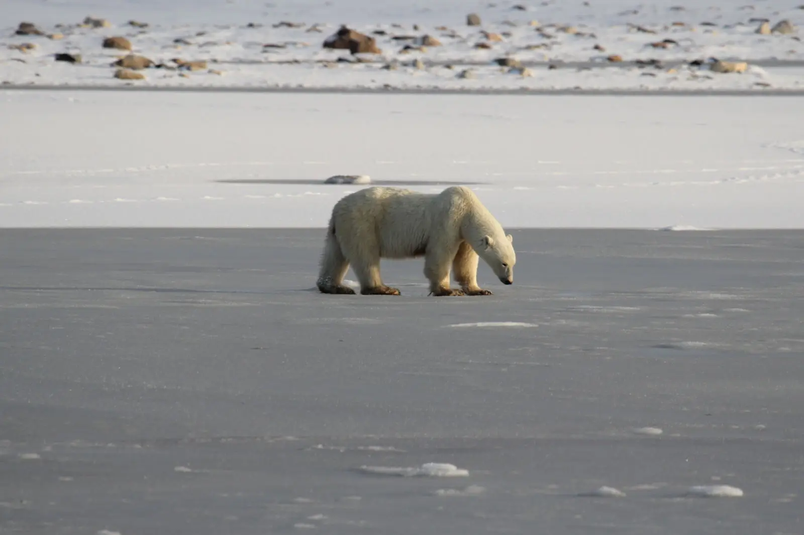

Харчування
Білий ведмідь — м’ясоїдний хижак найвищого рівня. Основою його харчування є тюлені, особливо кільчаста нерпа. Ведмідь чатує біля ополонок, де тюлені підіймаються для дихання.
Крім тюленів, він може їсти птахів, яйця, гризунів, молюсків, крабів, моржів, рештки китів, іноді північних оленів і вівцебиків. У кінці літа може споживати ягоди, коріння або водорості, але рослинна їжа не є основною.
Ланцюг живлення
морська крига → тюлені → білий ведмідь → верхівка харчового ланцюга Арктики.
